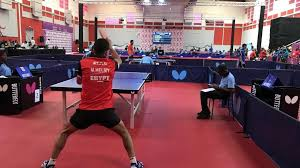

les reglezs du jeux de tennis de table
- Service:
Le joueur doit lancer la balle en l'air et la frapper avec sa raquette pour la faire passer par-dessus le filet et atterrir sur le côté opposé de la table. Le service alterne entre les joueurs après chaque point marqué.
- le renvie de la balle
Les points sont marqués lorsque l'adversaire ne parvient pas à renvoyer correctement la balle. Le premier joueur à atteindre 11 points, avec une différence de 2 points, remporte le jeu.
- changement de coté
Les joueurs changent de côté de la table après chaque jeu impaire (par exemple, après le premier jeu, le troisième jeu, etc.).
autres regles du jeux
Il y a d'autres règles spécifiques au tennis de table, comme le fait de ne pas toucher la table avec la main pendant le jeu, de ne pas toucher la balle plus d'une fois de suite, et de ne pas toucher le filet avec la raquette
NB:
Ce sont les règles de base du tennis de table, mais il y a aussi des règles plus avancées pour les compétitions officielles. C'est un jeu amusant et dynamique, j'espère que ça t'aide à mieux comprendre
